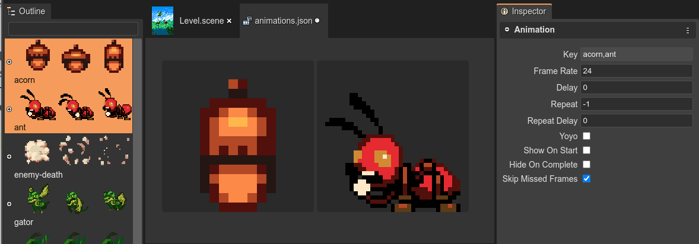

Editing the properties of the animations
These are the properties of an animation:
Key: The identifier of the animations. Used to play the animation in a sprite: sprite.play("walk").
Frame Rate: The frame rate of playback in frames per second (default 24).
Delay: Delay before starting playback. Value given in milliseconds.
Repeat: Number of times to repeat the animation (-1 for infinity).
Repeat Delay: Delay before the animation repeats. Value given in milliseconds.
Yoyo: Should the animation yoyo? (reverse back down to the start) before repeating?
Show On Start: Should sprite.visible = true when the animation starts to play?
Hide On Complete: Should sprite.visible = false when the animation finishes.
Skip Missed Frames: Skip frames if the time lags, or always advanced anyway?
By default, the editor shows all the animations and in the Inspector view shows the properties of all of them. However, you can click on an animation in the editor, to edit the properties of that single animation. Or select a couple of animations in the Outline view.
